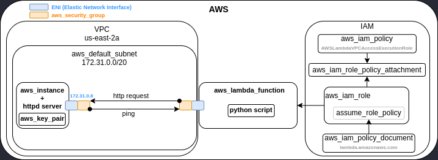
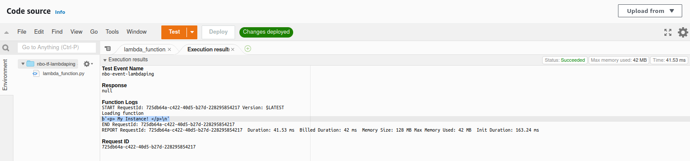
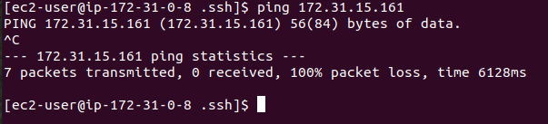

Context
Can we ping the ENI of an AWS Lambda function within the VPC ? While the answer can be obvious the path to get it was insightful for me and has helped me to be more comfortable with :
- AWS IAM.
- AWS Lambdas function.
- AWS Static IP addresses and AWS default subnets.
This test can be performed with the AWS free tier. You will find the Terraform scripts here : Lambda Ping
I am a network engineer, I like diagram. Below you can find the diagram of the test. 
What needs to be created
Infrastrusture:
- aws_key_pair
- aws_default_subnet
- aws_security_group
- aws_instance
Script:
- A python script executed with the AWS lambda function
IAM:
- aws_iam_role
- aws_iam_role_policy_attachment
- aws_iam_policy
- aws_iam_policy_document
Lambda:
- aws_lambda_function
This test is a good demonstration of one of the terraform benefits. Terraform is taking care of the dependencies and the order of creation between all resources. In the case of an imperative model for aws_key_pair and aws_instance you will need to explicitly state that aws_key_pair needs to be created before aws_instance is created. With the declarative approach of Terraform, you just declare the resources you want and Terraform is taking care of the execution order.
Resources creation
Infrastructure
aws_key
This is to push the public key of the computer that will be allowed to connect to the EC2 VM Instance.
resource "aws_key_pair" "deployer" {
key_name = "deployer-key"
public_key = file("~/.ssh/id_rsa.pub")
}
aws_default_subnet
This resource can’t modify the default subnet address but it allows you to retrieve it from your default VPC.
resource "aws_default_subnet" "default_az1" {
availability_zone = "us-east-2a"
}
aws_security_group
This will be the security group for the test. This security group will be assigned to the VM and the AWS lambda function to allow SSH to the VM, HTTP, ICMP between each other and outgoing traffic.
resource "aws_security_group" "sglambdaping" {
name = "sglambdaping"
description = "Allow HTTP, ICMP and SSH traffic"
ingress {
description = "SSH"
from_port = 22
to_port = 22
protocol = "tcp"
cidr_blocks = ["0.0.0.0/0"]
}
ingress {
description = "HTTP"
from_port = 80
to_port = 80
protocol = "tcp"
cidr_blocks = ["0.0.0.0/0"]
}
ingress {
description = "ALL_ICMP"
from_port = -1
to_port = -1
protocol = "icmp"
cidr_blocks = ["0.0.0.0/0"]
}
egress {
from_port = 0
to_port = 0
protocol = "-1"
cidr_blocks = ["0.0.0.0/0"]
}
tags = {
Name = "terraform"
}
}
aws_instance
The t2.micro VM instance. It will host one webserver to test that the ENI of the Lambda function works in our VPC by accessing it. This is also from this VM that we will try to ping the Lambda function’s ENI. I assign the VM to the default subnet of AZ1 which is normally 172.31.0.0/24. In the Terraform script I’m installing the webserver. I also assign a static IP address to be able to access the web server from the lambda function.
resource "aws_instance" "foo" {
ami = "ami-0443305dabd4be2bc"
instance_type = "t2.micro"
key_name = aws_key_pair.deployer.key_name
user_data = <<-EOF
#!/bin/bash
sudo su
yum -y install httpd
echo "<p> My Instance! </p>" >> /var/www/html/index.html
sudo systemctl enable httpd
sudo systemctl start httpd
EOF
vpc_security_group_ids = [
aws_security_group.ubuntu.id
]
private_ip = "172.31.0.8"
subnet_id = aws_default_subnet.default_az1.id
}
Python script
For the lambda part we first need a code that the function will execute. In this example it will be a HTTP request to our EC2 VM done with python urllib3 library.
#import json
import urllib3
print('Loading function')
def lambda_handler(event, context):
http = urllib3.PoolManager()
resp = http.request("GET", "http://172.31.0.8")
print(resp.data)
Once the script is ready, you need to zip it then place the zip in the same directory as your Terraform script that will create the function. We then need to create the lambda resources.
IAM
In this post I explain in detail what the role, the assume_role_policy and the policy are used for.
First we load a default AWS Managed Policy that will allow the lambda function to create the ENI in the VPC.
aws_iam_policy
data "aws_iam_policy" "vpcpolicy" {
name = "AWSLambdaVPCAccessExecutionRole"
}
We then create the role that will use this policy.
aws_iam_role
resource "aws_iam_role" "role-lambda" {
name = "nbolambdarole"
assume_role_policy = data.aws_iam_policy_document.lambda_role.json
}
In this role we need to mention who will use it. In our case this is the lambda function. This action is done by defining a policy document where the principal is a lambda function.
aws_iam_policy_document
data "aws_iam_policy_document" "lambda_role" {
statement {
effect = "Allow"
actions = ["sts:AssumeRole"]
principals {
type = "Service"
identifiers = ["lambda.amazonaws.com"]
}
}
}
Then we assign this policy to the assume_role_policy of the role
assume_role_policy = data.aws_iam_policy_document.lambda_role.json
The last step of the IAM configuration is to attach the role and the policy together.
aws_iam_role_policy_attachment
resource "aws_iam_role_policy_attachment" "role-policy-attach" {
role = aws_iam_role.role-lambda.name
policy_arn = data.aws_iam_policy.vpcpolicy.arn
}
Lambda
Once the IAM part is done, we can create the lambda function. In our case we assign the previously created role to the function and the python script zip file.
aws_lambda_function
resource "aws_lambda_function" "lambda-get" {
function_name = "nbo-tf-helloword-3"
role = aws_iam_role.role-lambda.arn
filename = "lambda_function.zip"
source_code_hash = filebase64sha256("lambda_function.zip")
runtime = "python3.9"
handler = "lambda_function.lambda_handler"
vpc_config {
subnet_ids = [aws_default_subnet.default_az1.id]
security_group_ids = [aws_security_group.sglambda.id]
}
}
- The source_code_hash is used to see if the lambda function has changed and then need to be updated.
- The handler is normally the name of the python script dot the name of the python method you want to execute.
- vpc_config is the VPC part of the lambda configuration to specify the security group associated to the lambda ENI and the subnet where the ENI will be.
The tests
Lambda will access the web server to validate the communication. To launch the test, we need to create an empty event that will be selected when we will click on the orange test button.
Click on the orange test button :) It should reply “My Instance” 
After the communication is validated, we can connect to the EC2 VM instance to launch the ping command. It will fail to ping the Lambda function.

Challenges of this test
- Understand the AWS IAM concept for the lambda function. The lambda function needs VPC rights to create the ENI in the VPC.
- Find what default python library was available with AWS python to execute the HTTP request.
- Understand how the lambda tests are done and what is a handler.